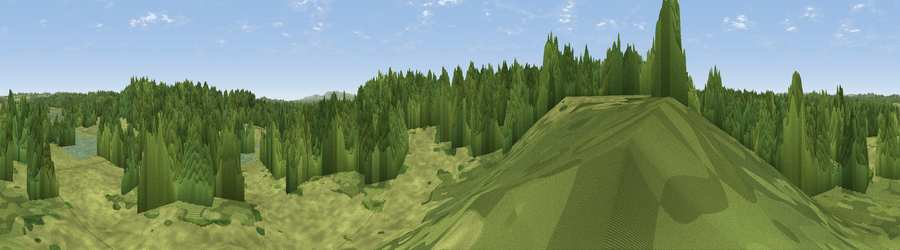

Viewpoint near Sandford
#38741 in England · top 83% of its area beats it · near SandfordThe view, rendered

A 360° render of this exact spot computed from the terrain model, tree cover and land cover — summer colours, afternoon light, calibrated against photographs of famous viewpoints. Real trees, hedges and buildings will differ in detail.
The panorama
Grey silhouette: terrain skyline in each direction (720 bearings, Earth curvature and refraction included). Dashed green: skyline with trees (+15 m) and buildings (+8 m) as obstacles. Blue strip: how far the ground is visible on each bearing.
Where the view opens
Wedge length = distance to the farthest visible ground on that bearing (vegetation-aware). Rings at 10, 25 and 50 km.
What fills the view
55% woodland · 40% grassland · 4% wetland
Angular shares of the visible panorama (visual magnitude), not map area. Landscape diversity 0.37 (0–1 Shannon).
Key numbers
More beautiful places nearby
The staircase of upgrades: each row has a higher view potential than everything closer. Driving times are estimates from straight-line distance, calibrated against real road routing — check an actual route before setting out.
| Place | Direction | Drive | Score |
|---|---|---|---|
| Little Ovens Hill | NE · 1 km | ~2 min | 39.3 |
| Woolsbarrow Hill | NW · 3 km | ~8 min | 52.8 |
| Viewpoint near Arne | ESE · 6 km | ~13 min | 55.2 |
| Viewpoint near Bere Regis | NW · 8 km | ~15 min | 56.1 |
| Viewpoint near Kimmeridge | S · 8 km | ~16 min | 82.9 |
| Viewpoint near Kimmeridge | S · 8 km | ~16 min | 84.1 |
| Whiteway Hill | SSW · 9 km | ~18 min | 85.0 |
| Viewpoint near Kimmeridge | S · 10 km | ~20 min | 86.6 |
50.70712, -2.12552 · source: osm viewpoint · position refined by local search. Computed location — check access rights before visiting.